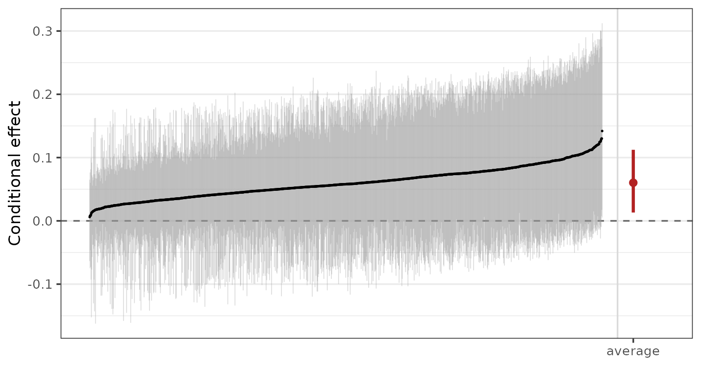
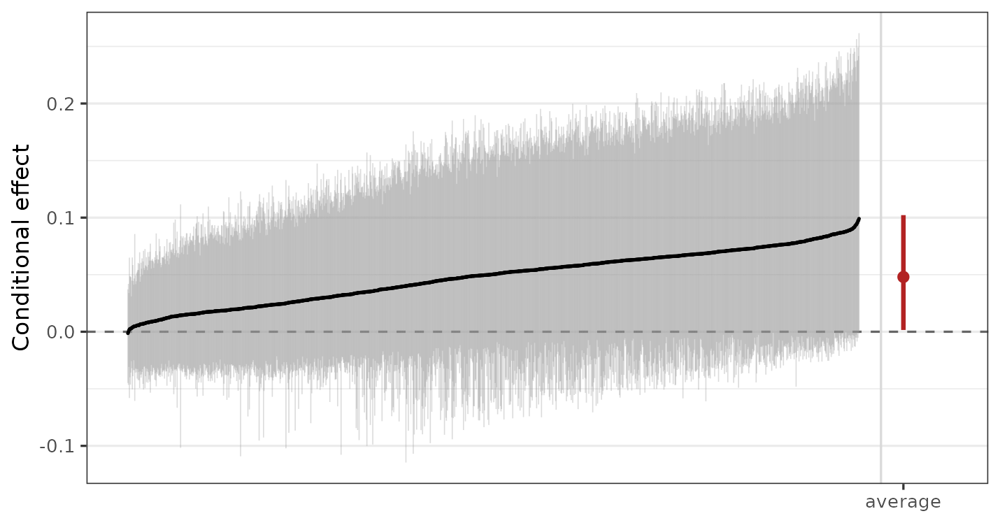

Varying Coefficients and Random Intercepts
Noah Greifer
2026-09-25
Source:vignettes/varying.Rmd
varying.RmdIntroduction
A BART model is a sum of trees, and a sum of trees has no
coefficients. It predicts, and an effect is read off it as a contrast
between two predictions, as estimate_effect() and the
marginaleffects functions in vignette("effects")
do. That is the right reading for most predictors. For some, though, we
want the effect to be a parameter: something with a prior of
its own, a posterior of its own, and a value we can report as a
coefficient rather than reconstruct as a difference. The treatment in a
causal analysis is the usual case, and so is any predictor whose effect
is the whole point of the model.
vc() is how a predictor is given a coefficient in
bartisan, and the coefficient it gets is a function rather than
a number: a forest of its own that says how the effect moves with the
other predictors. This is the varying-coefficient model of Deshpande et al. (2026), of which the Bayesian causal
forest of Hahn et al. (2020) is the case of one binary
covariate and Woody et al. (2020) the case of one continuous one.
bcf() fits that special case with the settings the causal
problem wants, and this guide is where the general model is
described.
In this guide we will write the model down and say what each of its
parts is, then declare a varying coefficient with vc() and
work through its three arguments: which predictors the coefficient
varies with, where the control function is read, and what happens when
the coefficient is not allowed to vary at all, which is how a linear
term is written into an otherwise nonparametric model. Next we’ll read
the fit, both as coefficients and as effects, and see how the settings
of a fit are keyed by forest once there is more than one. Then we’ll
show how bcf() writes its model in these terms. Finally,
because they are declared in the same formula and explained nowhere
else, we’ll cover random intercepts.
Throughout we use the rhc dataset (see
vignette("bartisan") or
help("rhc", package = "bartisan")), predicting
death from the covariates and from rhc,
whether the patient received right heart catheterization. The fits use
the default single chain; vignette("diagnostics") covers
checking convergence, which we skip here for brevity.
The Model
A model with varying coefficients is
\[g(\mu_i) = f_0(Z_i) + \sum_j (X_{ij} - c_j)\, f_j(Z_i)\]
where \(g\) is the link, \(Z_i\) is the vector of predictors, and each \(X_{ij}\) is a predictor that has been given a coefficient. \(f_0\) is a forest we will call the control function, following Hahn et al. (2020): the surface for the outcome when every \(X_j\) is at its centering value \(c_j\). Each \(f_j\) is a forest of its own, and it is the coefficient on \(X_j\): how much the linear predictor moves per unit of \(X_j\), as a function of whatever \(f_j\) is allowed to split on. With a single binary \(X\), \(f_1\) is the conditional treatment effect on the link scale, one value per covariate profile.
All of the forests are fitted at once. That gives the coefficient a prior of its own. Were \(X_j\) simply one predictor among many in a single forest, its effect would be whatever difference that forest happened to produce, regularized by the same prior that regularizes everything else, and Hahn et al. (2020) show that shrinking the prognostic surface then shrinks the effect along with it. With \(f_j\) separate, it can have a prior of its own, and in particular a tighter one, since the ways an effect varies are usually simpler than the surface it sits on.
Declaring a Varying Coefficient (vc())
vc() is a marker written inside the formula. It is never
evaluated as a function (calling it directly is an error) but is read
out of the formula by bartisan(), which builds the forests
it asks for.
set.seed(2026)
fit_vc <- bartisan(death ~ age + sex + race + edu + aps +
meanbp + resp + hema + pafi +
paco2 + crea + surv2m + card +
vc(rhc),
data = rhc, family = binomial())
fit_vc
#> Generalized BART
#>
#> Call:
#> bartisan(formula = death ~ age + sex + race + edu + aps + meanbp +
#> resp + hema + pafi + paco2 + crea + surv2m + card + vc(rhc),
#> data = rhc, family = binomial())
#>
#> Family: "binomial" with the "logit" link
#> Observations: 1500
#> Structure: 2 forests of 50 trees, soft decision rules
#> Draws: 800 kept after 200 warmupThe print shows two forests where a fit without vc()
would show one. These forests are the control function, named
(Intercept), and the coefficient, named for its covariate.
Both are fitted with the same number of trees here, which is the default
and is taken up below.
A predictor that has been given a coefficient should be kept out of
the control function. Were rhc among \(f_0\)’s predictors as well as multiplying
\(f_1\), the two would not be
separately identified, since any function of rhc can move
from one to the other without changing a single prediction.
We can examine the structure of the forest for the rhc
coefficient using summary(), which includes a table for
each forest in the model:
summary(fit_vc)
#> Generalized BART
#>
#> Call:
#> bartisan(formula = death ~ age + sex + race + edu + aps + meanbp +
#> resp + hema + pafi + paco2 + crea + surv2m + card + vc(rhc),
#> data = rhc, family = binomial())
#>
#> Family: "binomial" with the "logit" link
#> Observations: 1500
#> Structure: 2 forests of 50 trees, soft decision rules
#> Draws: 800
#>
#> Predictor usage
#> Splitting rules per draw, and how often used at all.
#>
#> Predictor "(Intercept)":
#> mean sd lower upper prop_used
#> age 9.807 5.448 2 23.025 1.000
#> paco2 8.586 4.770 2 21.000 1.000
#> surv2m 19.680 7.587 7 36.000 1.000
#> aps 6.207 4.572 0 18.000 0.932
#> pafi 4.781 3.338 0 13.000 0.911
#> hema 5.468 4.189 0 16.000 0.907
#> card 4.411 3.431 0 13.000 0.895
#> race 3.421 2.636 0 9.000 0.855
#> edu 2.791 2.812 0 9.000 0.739
#> meanbp 2.920 3.443 0 13.000 0.730
#> sex 2.901 2.916 0 10.000 0.725
#> crea 2.996 3.068 0 10.000 0.689
#> resp 2.118 2.478 0 8.025 0.639
#>
#> Predictor "rhc":
#> mean sd lower upper prop_used
#> hema 9.485 8.290 1 34.00 0.984
#> aps 13.332 14.347 0 51.02 0.961
#> paco2 4.935 3.961 0 15.00 0.884
#> card 7.888 6.355 0 26.02 0.881
#> crea 5.249 5.043 0 19.00 0.880
#> surv2m 4.880 4.291 0 15.03 0.804
#> sex 5.505 5.161 0 18.00 0.801
#> edu 4.211 4.053 0 15.03 0.769
#> resp 3.825 3.625 0 12.00 0.755
#> pafi 3.859 3.090 0 10.00 0.754
#> meanbp 5.155 6.639 0 26.00 0.733
#> age 3.639 3.873 0 14.00 0.684
#> race 2.609 2.855 0 9.00 0.655We can see that age, paco2, and
surv2m were used in every tree in the control function
((Intercept)) forest, but hema was the most
frequently used predictor in the varying coefficient (rhc)
forest.
Effect Modifiers (modifiers)
By default, a coefficient is allowed to vary with every predictor in
the model except the covariate itself. Supplying an argument to
modifiers, the second argument to vc() taking
a one-sided formula, allows one to control which predictors enter the
coefficient forest.
set.seed(2026)
fit_aps <- bartisan(death ~ age + sex + race + edu + aps +
meanbp + resp + hema + pafi +
paco2 + crea + surv2m + card +
vc(rhc, ~ aps + age),
data = rhc, family = binomial())Now the effect of catheterization may differ by severity of illness
(aps), age, and nothing else, which is a
statement about the model and not a restriction the data can undo.
Restricting the modifiers is worth doing when there is reason to think
the effect depends only on a few specific predictors, since a forest
asked to search fourteen predictors for heterogeneity that lives in two
will spend some of its prior on the other twelve.
Calling summary() on fit_aps, we can see
that the only variables used in the varying coefficient forest are
indeed aps and age, as requested:
summary(fit_aps)
#> Generalized BART
#>
#> Call:
#> bartisan(formula = death ~ age + sex + race + edu + aps + meanbp +
#> resp + hema + pafi + paco2 + crea + surv2m + card + vc(rhc,
#> ~aps + age), data = rhc, family = binomial())
#>
#> Family: "binomial" with the "logit" link
#> Observations: 1500
#> Structure: 2 forests of 50 trees, soft decision rules
#> Draws: 800
#>
#> Predictor usage
#> Splitting rules per draw, and how often used at all.
#>
#> Predictor "(Intercept)":
#> mean sd lower upper prop_used
#> age 10.666 6.365 3 28 1.000
#> pafi 7.726 5.283 1 21 1.000
#> surv2m 21.008 12.399 7 52 1.000
#> paco2 6.676 4.327 1 17 0.986
#> aps 6.971 6.712 0 27 0.930
#> crea 6.746 5.745 0 22 0.889
#> meanbp 3.087 3.506 0 14 0.740
#> race 3.476 3.649 0 12 0.729
#> hema 2.631 2.916 0 9 0.620
#> card 1.866 2.427 0 8 0.603
#> edu 1.866 2.164 0 7 0.588
#> sex 1.826 2.329 0 8 0.552
#> resp 1.484 2.077 0 7 0.498
#>
#> Predictor "rhc":
#> mean sd lower upper prop_used
#> age 55.78 17.51 18.98 85 1.000
#> aps 19.67 16.93 0.00 54 0.796
#> sex 0.00 0.00 0.00 0 0.000
#> race 0.00 0.00 0.00 0 0.000
#> edu 0.00 0.00 0.00 0 0.000
#> meanbp 0.00 0.00 0.00 0 0.000
#> resp 0.00 0.00 0.00 0 0.000
#> hema 0.00 0.00 0.00 0 0.000
#> pafi 0.00 0.00 0.00 0 0.000
#> paco2 0.00 0.00 0.00 0 0.000
#> crea 0.00 0.00 0.00 0 0.000
#> surv2m 0.00 0.00 0.00 0 0.000
#> card 0.00 0.00 0.00 0 0.000When the modified variable is continuous, modifiers
decides whether the effect is linear in the covariate. As written, the
model is \(z\, f_1(Z)\), which for a
binary \(z\) is no assumption at all,
there being only two values, and for a continuous one says the effect is
conditionally linear. That is a real restriction, and a numeric
covariate is allowed to modify its own coefficient to remove it:
# The effect of `aps` may itself change across `aps`, so the dose response is
# a curve rather than a line through the origin
bartisan(death ~ age + sex + vc(aps, ~ . + aps),
data = rhc, family = binomial())This fits \(\text{aps} \cdot
f_1(\text{aps},\, \text{age},\, \text{sex})\), so the slope moves
across the range of aps, and it is worth reaching for
whenever the effect of a continuous predictor might not be proportional
to it. A categorical covariate is removed from its own forests instead:
a level’s indicator is nonzero only on the rows where that level holds,
and the variable is constant on exactly those rows, so a split on it
would separate rows that contribute from rows that contribute
nothing.
Centering the Covariate (center)
The \(c_j\) in the model are the
values at which the control function is read, and the
center argument chooses them. This is a reparameterization
of \(f_0\) alone: every coefficient and
every estimand is identical under any choice, and the choice changes
only what the control function means and how well the two forests mix.
The default, "auto", picks by the covariate. A
0/1 covariate is left at zero, so \(f_0\) is the surface among the binary
predictor’s reference level, which is a quantity with a meaning of its
own. Any other numeric covariate is centered at its mean, because zero
may be nowhere near the data and a control function read there would be
an extrapolation. "zero", "mean",
"mid" (the midpoint of the range), or a specific number
override that.
A factor is handled differently. It is always fitted mean-centered
and gets one forest per level, coded symmetrically rather than as
contrasts against whichever level happened to sort first, and
coef() recenters the coefficients to sum to zero across the
levels. That coding leaves the reference level a reporting choice: the
center argument names the level to report against, and no
refit is needed to change it.
Setting center = "estimate" is different in kind. Rather
than subtract a number from the covariate, it gives each of the
covariate’s values a coefficient of its own and draws it, so
that every contrast carries the same prior whatever the number of values
and no value is a reference. At two values it restricts nothing, and
bcf() uses it for a binary treatment: with it, the answer
stops depending on which arm was written as 1. Above two values every
contrast becomes one shared shape times a scalar, where the symmetric
coding gives each level its own, so it is the parsimonious model against
a general one, and the one to reach for when the levels plausibly differ
in degree rather than in kind. It needs a covariate with between two and
twenty distinct values, and a family whose leaf target is quadratic in
the predictor it feeds, which is why bcf() falls back to
the fixed coding for a family that is not.
A Constant Coefficient (vc(z, ~ 1))
Naming no modifier at all leaves the coefficient’s forest nothing to split on. Every tree in it is then a stump, the coefficient is a single drawn number, and the covariate enters the model as a linear term while everything else stays nonparametric. That is the semiparametric case of the General BART model of Tan and Roy (2019), a forest and a parametric part taking disjoint sets of predictors, and it is the shape stan4bart and flexBART fit1.
Comparing the constant coefficient against the varying one is a
question neither variable importance nor a dropped predictor answers:
not whether rhc matters, but whether what it does depends
on anything else. loo_compare() from loo answers
it; vignette("comparison") covers what it is doing.
set.seed(2026)
constant <- bartisan(death ~ age + sex + race + edu + aps +
meanbp + resp + hema + pafi +
paco2 + crea + surv2m + card +
vc(rhc, ~ 1),
data = rhc, family = binomial())
constant
#> Generalized BART
#>
#> Call:
#> bartisan(formula = death ~ age + sex + race + edu + aps + meanbp +
#> resp + hema + pafi + paco2 + crea + surv2m + card + vc(rhc,
#> ~1), data = rhc, family = binomial())
#>
#> Family: "binomial" with the "logit" link
#> Observations: 1500
#> Structure: 2 forests of 50 trees, soft decision rules
#> Draws: 800 kept after 200 warmup
library(loo)
loo_compare(list(constant = loo(constant), varying = loo(fit_vc)))
#> model elpd_diff se_diff p_worse diag_diff diag_elpd
#> constant 0.0 0.0 NA
#> varying -1.4 1.3 0.85 |elpd_diff| < 4The constant coefficient is not beaten, so there is no evidence here that the effect of catheterization on the log odds of death varies with the other covariates. That buys an interpretation the varying fit cannot offer, because one number describes the whole sample:
b <- coef(constant, draws = TRUE)[["rhc"]][, 1]
c(log_OR = mean(b),
OR = exp(mean(b)),
lower = quantile(exp(b), .025, names = FALSE),
upper = quantile(exp(b), .975, names = FALSE)) |>
round(3)
#> log_OR OR lower upper
#> 0.356 1.428 1.115 1.859An odds ratio of about 1.4, conditional on the predictors in the forest. A constant conditional odds ratio is a much more clinically meaningful effect summary than a marginal effect measure because it describes the estimated effect for each patient profile as determined by the included covariates, as opposed to an average effect across a whole population. This is the same interpretation a coefficient in a logistic regression would have, but fit with BART, we can be reasonably confident that any nonlinearities and interactions among covariates are adjusted for, whereas a logistic regression must impose the model structure a researcher believes to be there.
It is important to remember that the coefficient is drawn under the leaf prior of its own forest and not under a prior written for a regression coefficient, so it is shrunk toward zero and is a regularized log odds ratio rather than a maximum likelihood one; because the leaf scale is divided by \(\sqrt{m}\) for a forest of \(m\) trees, that prior does not change with the number of trees. Also, the comparison between a fixed and a varying coefficient is far better powered on some outcomes than others. On a Gaussian outcome with a coefficient truly ranging from 0.3 to 2.5, the varying coefficient was easily preferred at \(n = 1000\); on a binary outcome with the same coefficients, both models were equally preferred. A null result on a binary outcome at a few hundred observations says little, and should not be read as evidence that an effect is constant.
Reading a Fit
The Coefficients (coef())
coef() returns the varying coefficients and nothing
else. The control function is a prediction rather than a coefficient,
and predict() reports it.
head(coef(fit_vc))
#> rhc
#> [1,] 0.5112
#> [2,] 0.2193
#> [3,] 0.2502
#> [4,] 0.3295
#> [5,] 0.3445
#> [6,] 0.3514coef() returns one row per observation and one column
per coefficient, since a coefficient allowed to vary has a value for
each observation: for the first patient, or more precisely for a patient
with the first patient’s covariate profile, the log odds of death move
by 0.511 under catheterization. The values are on the link scale, so for
a binary outcome they are differences in log odds rather than in
probability. Supplying newdata evaluates the coefficients
at other covariate profiles, and setting draws = TRUE
returns every posterior draw rather than the mean, as a list with one
draws-by-observations matrix per coefficient, which an interval on any
one patient’s coefficient needs.
draws <- coef(fit_vc, draws = TRUE)[["rhc"]]
# A 95% interval on the coefficient for the first three patients
t(apply(draws[, 1:3], 2L, quantile, c(.025, .975)))
#> 2.5% 97.5%
#> [1,] -0.01713 1.1921
#> [2,] -0.31305 0.7657
#> [3,] -0.36013 0.8276summary() on the fit reports the forests as it does for
any fit, and prior_summary() writes out the prior each one
was drawn under, including the leaf scale of the coefficient forest,
which is where the regularization that separates the effect from the
surface lives.
Effects From the Coefficients (estimate_effect())
A coefficient on the link scale is one step from an effect on the
response scale, and estimate_effect() makes it easier to
report meaningful contrasts. With treat naming the
covariate, it predicts outcomes under each of the predictor’s values and
contrasts them. Setting estimand = "CATE" returns one
effect per unit, here on the risk difference scale, and
plot() on that draws them ordered by their estimate with
the marginal effect as a separate interval past the right edge.
cate <- estimate_effect(fit_vc, treat = "rhc", estimand = "CATE")
plot(cate)
The marginal effect, effects by subgroup, or the effect as a ratio
are all the same call with different arguments. For example, setting
comparison = "or" displays the effects on the conditional
odds ratio scale. ?estimate_effect documents these
arguments, and vignette("causal") is where the assumptions
live that turn any of them into a causal effect.
Settings That Vary by Forest
Every forest has its own prior, and every setting in
bartisan_control() that could mean something different for
one forest than for another may be given once, to apply to all, or once
per forest. Given per forest, the values are either positional in the
order the forests are listed in the fit’s print, or keyed by the forest
names. Both of these ask for fifty trees in the control function and
twenty-five in the coefficient:
bartisan(death ~ age + sex + race + edu + aps +
meanbp + resp + hema + pafi +
paco2 + crea + surv2m + card +
vc(rhc),
data = rhc, family = binomial(), num_trees = c(50L, 25L))
bartisan(death ~ age + sex + race + edu + aps +
meanbp + resp + hema + pafi +
paco2 + crea + surv2m + card +
vc(rhc),
data = rhc, family = binomial(),
num_trees = c("(Intercept)" = 50L, rhc = 25L))A forest a named argument does not mention keeps that argument’s own
default rather than borrowing another forest’s value. The settings this
covers are num_trees, k,
sigma_mu, sparsity, split_prior,
bandwidth, gamma, beta, the four
alpha arguments, and the three update_ flags;
?bartisan_control lists them.
Fewer trees for a coefficient than for the control function is the
setting worth knowing about, and it is the one bcf() makes
by default. A coefficient forest describes how an effect varies, and
that is usually a simpler surface than the outcome’s, so it needs less
capacity; and with less capacity it competes less with the control
function for the same variation, which keeps the two well separated in
the posterior. When a fit with a varying coefficient mixes badly, a
coefficient forest that is too large is the first thing to try.
The sparsity argument is the other setting that reads
differently on a coefficient forest. On the control function it selects
among the predictors the way it does in any BART fit. On a coefficient
forest what it selects among is the modifiers, and dropping all
of them leaves an effect that does not vary rather than an effect that
is zero, since nothing can drop the covariate the forest multiplies.
That is the shrinkage a heterogeneity model wants, and it is why
bcf() leaves sparsity on where a single-forest
treatment model turns it off; vignette("effects") covers
the single-forest case.
Families With Several Additive Predictors
gaussian_ls(), zi_poisson() and the other
families with more than one additive predictor fit one control function
per parameter, and each parameter’s formula carries its own
vc() terms. The forests are then two-dimensional, a control
function and its coefficients for each parameter, and are named
accordingly:
# Forests: mean, mean:z, log_sd
bartisan(list(mean = y ~ x1 + x2 + vc(z),
log_sd = ~ x1 + x2),
data = d,
family = gaussian_ls())
# Forests: mean, mean:z, log_sd, log_sd:z. One formula reaches every parameter,
# which is the rule every per-forest argument follows too
bartisan(y ~ x1 + x2 + vc(z), data = d, family = gaussian_ls())
# Each coefficient with modifiers of its own
bartisan(list(mean = y ~ x1 + x2 + vc(z, ~ x2),
log_sd = ~ x1 + x2 + vc(z, ~ x1)),
data = d, family = gaussian_ls())So the same covariate may have a coefficient on more than one
parameter. z shifting the mean and z widening
the spread are different questions, and both are answered at once, and
coef() returns one column per coefficient, named
mean:z and log_sd:z for the forests they come
from.
Those names are also how the per-forest settings are keyed, and every
forest can be set at once. With four forests, a control function and a
coefficient for each parameter, num_trees takes four
values, either positionally in the order the forests are listed in the
fit’s print or by name:
# The mean's control function and coefficient, then the log standard
# deviation's, in the order the print lists them
bartisan(y ~ x1 + x2 + vc(z), data = d, family = gaussian_ls(),
num_trees = c(50L, 20L, 15L, 10L))
# The same, by name; the order then does not matter
bartisan(y ~ x1 + x2 + vc(z), data = d, family = gaussian_ls(),
num_trees = c("mean" = 50L, "mean:z" = 20L,
"log_sd" = 15L, "log_sd:z" = 10L))A forest a named vector leaves out keeps the argument’s own default
rather than taking its parameter’s value: setting
num_trees = c(mean = 50L, log_sd = 15L) gives both
coefficient forests the default of 50, not 50 and 15. Name the
coefficient forests too when they are meant to differ.
Bayesian Causal Forests (bcf())
The Bayesian causal forest of Hahn et al. (2020) is a varying coefficient model
with one binary covariate, the treatment, and a handful of choices made
for the causal problem. bcf() implements this model with
these modifications to support treatment effect estimation. Given a
formula for the covariates and the treatment named in
treat, it writes a bartisan() call that could
have been written directly:
set.seed(2026)
fit_bcf <- bcf(death ~ age + sex + race + edu + aps +
meanbp + resp + hema + pafi +
paco2 + crea + surv2m + card,
treat = ~ rhc, data = rhc, family = binomial())
fit_bcf
#> Generalized BART
#>
#> Call:
#> bcf(formula = death ~ age + sex + race + edu + aps + meanbp +
#> resp + hema + pafi + paco2 + crea + surv2m + card, treat = ~rhc,
#> data = rhc, family = binomial())
#>
#> Family: "binomial" with the "logit" link
#> Observations: 1500
#> Structure: 2 forests of 50 and 25 trees, soft decision rules
#> Draws: 800 kept after 200 warmup
#>
#> Posterior means: b.rhc.0 = -0.0532, b.rhc.1 = -0.523
#>
#> Treatment: "rhc"
#> Effect moderators: "age", "sex", "race", "edu", "aps", "meanbp", "resp", "hema", "pafi", "paco2", "crea", "surv2m", and "card"
#> ℹ `estimate_effect()` reports the treatment effect, with the average potential
#> outcomes beside it; `plot()` draws the conditional ones.bcf() makes the following modifications to a standard
bartisan() call:
- The treatment gets a
vc()term, so its effect is a forest with a prior of its own, which is everything above. 2. The estimated propensity score, fitted by a logistic BART model on the same covariates, goes into the control function as a predictor named.propensityand not into the effect forest, so that the control function absorbs the selection into treatment while the effect stays free of it; that is the remedy Hahn et al. (2020) propose for what they call regularization-induced confounding. - The effect forest gets fewer trees than the control function, 25 against 50, for the reason given in the section above.
- A binary treatment’s coding is drawn rather than fixed, which is
center = "estimate", so the answer is the same whichever arm was written as 1. - The
sparsityargument is left on, since the treatment is the coefficient rather than a predictor a splitting proportion could drop (note this is in line with thebartisan()default, but not what is otherwise recommend for treatment effect estimation without a varying coefficient model).
The moderators argument is vc()’s
modifiers under the name the causal literature uses, and
the propensity model is bartisan() with
propensity_args for its settings.
Written out by hand, and leaving aside that the propensity score would have to be fitted and added to the data first, the model is
bartisan(death ~ age + sex + race + edu + aps +
meanbp + resp + hema + pafi +
paco2 + crea + surv2m + card + .propensity +
vc(rhc, center = "estimate"),
data = rhc, family = binomial(), num_trees = c(50L, 25L))and every method that works on a bartisan() fit works on
a bcf() fit unchanged, since the second is the first with
the treatment recorded. What the record adds is that
estimate_effect() needs no treat,
print() names the treatment and its moderators, and
plot() on the fit is
plot(estimate_effect(fit, estimand = "CATE")):
plot(fit_bcf)
The reasons to write the model by hand rather than through
bcf() are the ones this guide is about: a coefficient on
something other than a treatment, more than one of them, a continuous
covariate whose effect should not be linear in it, or a family with
several additive predictors. vignette("causal") covers what
has to be true of the design for any of these effects to be read
causally, which no model supplies.
Random Intercepts ((1 | group))
A (1 | group) term in the formula adds an intercept per
level of group, drawn from a common mean-zero normal whose
standard deviation is itself drawn, under the same half-Cauchy prior the
leaf scale uses (Gelman
2006; Polson and Scott 2012).
Several grouping factors are allowed, and (1 | a/b) expands
to nesting as it does in lme4.
The rhc data has no grouping structure, so we simulate
one: forty groups of about fifteen observations each, a nonlinear effect
of one covariate, and a group effect with a standard deviation of one
half.
set.seed(2026)
n_groups <- 40L
d <- data.frame(g = factor(sample(n_groups, 600L, replace = TRUE)),
x = runif(600L))
u <- rnorm(n_groups, 0, 0.5)
d$y <- sin(2 * pi * d$x) + u[d$g] + rnorm(600L, 0, 0.5)
fit_re <- bartisan(y ~ x + (1 | g), data = d)
fit_re
#> Generalized BART
#>
#> Call:
#> bartisan(formula = y ~ x + (1 | g), data = d)
#>
#> Family: "dpm" with the "identity" link
#> Observations: 600
#> Structure: 1 forest of 50 trees, soft decision rules
#> Draws: 800 kept after 200 warmup
#> Random intercepts: g (40 levels)
#>
#> Posterior means: alpha = 3.37, clusters = 15.7, center = -0.0182, error_sd = 0.521The intercepts are in fit_re$ranef and the standard
deviation they were drawn under in fit_re$tau, one matrix
of draws per additive predictor with a column per grouping factor, and
summary() reports that scale beside the leaf scale.
ranef() is the generic from nlme, which
lme4 re-exports, so either qualification reaches the method;
setting draws = TRUE gives the draws, which an interval on
a group needs.
# How much of the variation is between groups: the posterior of the group scale
quantile(fit_re$tau[[1L]][, "g"], c(.025, .5, .975))
#> 2.5% 50% 97.5%
#> 0.4220 0.5221 0.6656
# The intercepts, as posterior means, against the values they were drawn from
re <- nlme::ranef(fit_re)$g
cor(re[, "(Intercept)"], u)
#> [1] 0.9613
# With intervals, for the first four groups
apply(nlme::ranef(fit_re, draws = TRUE)$g[["(Intercept)"]][, 1:4], 2L,
quantile, c(.025, .975))
#> 1 2 3 4
#> 2.5% 0.3092 0.09548 -0.5970 -0.7757
#> 97.5% 0.8688 0.72409 0.0372 -0.2062A posterior mean is the wrong summary for a level with few observations, which is the case a group intercept exists for, and a level whose interval covers zero is one the data had little to say about. The intercepts are shrunk toward zero by their prior and are deviations from the additive predictor, so they come out approximately centered without being constrained to sum to zero exactly; nothing is lost by that, since the level of the fitted function is the additive predictor’s.
There are a few details about this term worth knowing. Only intercepts are supported, and a random slope is refused rather than ignored. A random intercept is a scalar entering the predictor with weight one for the observations in its level, exactly as a leaf is once its gate is removed, so the sampler’s leaf machinery handles it, closed forms included; a slope is a scalar multiplying a covariate, which is a different shape of parameter. A variable whose effect varies by group belongs in the fixed part of the formula, where a tree can split on the group and on the variable together and get an interaction of any shape. A grouping factor can also go in the fixed part, where a tree splits on it like anything else, and with few large groups that is the better choice: the group means are well determined without pooling, and a split can interact the group with the covariates. The random intercept wins where there are many small groups, which is where partial pooling earns its keep. A level not seen at fitting time is given the prior mean of zero when predicting, with a warning.
A family with several additive predictors gets a separate set of
intercepts for each, independent of one another, so a zero-inflated
count model has a group effect on the count part and another on the
inflation part, and the columns of ranef() are named for
the predictors rather than (Intercept). A group intercept
reaches every control function and no coefficient, since a group-varying
coefficient would be a random slope. prior_summary()
reports the prior the scale was drawn under.
Further Reading
?vc is the reference for the arguments used here, and
?bcf for what it writes into a bartisan() call
and how it handles a categorical or continuous treatment.
vignette("causal") covers the assumptions under which a
coefficient on a treatment is a causal effect, and
vignette("effects") the contrasts and curves that read an
effect off a fit without a coefficient.
vignette("comparison") covers loo_compare(),
on which the constant-against-varying comparison above rests.
?bartisan documents the (1 | group) syntax,
and ?ranef.bartisan_fit what comes back.